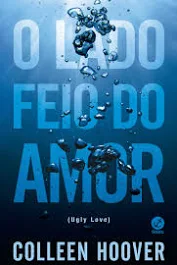
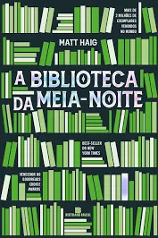
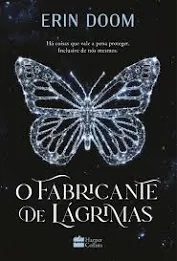
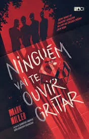

-
O lado feio do Amor
Quando começou a se envolver com Miles, Tate prometeu não se apaixonar. Mas vai descobrir que nenhuma regra é capaz de controlar o amor e o desejo...Da autora-fenômeno Colleen Hoover, que acumula best- sellers , visualizações no TikTok e milhares de leitores apaixonados no mundo todo.
R$55,00
-
Eu e Esse meu Coração
Leah MacKenzie, de 17 anos, não tem coração. O que a mantém viva é um coração artificial que ela carrega dentro de uma mochila. Com seu tipo sanguíneo raro, um transplante é como um sonho distante. Conformada, ela tenta se esquecer de que está com os dias contados, criando uma lista de “coisas para fazer antes de morrer”.
R$38,00
-
Tudo que meu coração grita desde o dia em que você (o) partiu
"Talvez eu nunca consiga entender sinceramente e verdadeiramente os seus motivos. Talvez eu nunca aceite definitivamente a sua escolha de ir. Talvez eu sempre me lembre da gente pensando em tudo o que a gente não foi. Mas não importa. Nada mais do que passou importa. Agora eu olho pra frente. Eu olho pra quem eu me tornei depois de tudo. Depois de você. Depois de nós.
R$35,00
-
A bliblioteca da Meia Noite
A Biblioteca da Meia-Noite é um romance incrível que fala dos infinitos rumos que a vida pode tomar e da busca incessante pelo rumo certo.
R$30,00
-
O fabricante de lagrimas
O fenômeno internacional que inspirou o filme da Netflix – um romance proibido entre dois adolescentes que, ao serem adotados pela mesma família, são obrigados a lidar com um amor que pode arruiná-los.
R$60,00
-
Ninguém vai te ouvir gritar
"A Academia Masters é um dos internatos mais prestigiados dos Estados Unidos. Escondido em uma ilha na costa da Flórida e cercado por muros impenetráveis, o internato recebe novas turmas anualmente. Mas, além dos alunos, abriga segredos sinistros e ameaças letais.
R$45,00